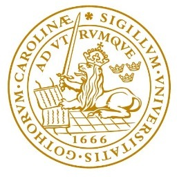

LibreCat members offer Training and Workshops on a regular basis.
by Lund University Library / LibreCat
 Lund University Library invites you to an afternoon where the common theme will be research data and how different libraries approach the new tasks that come with the increasing interest in making research data available and reusable. All presentations will be held in English.
Myriam Mertens, research data manager at Ghent University will talk about "Research Data at Ghent University".
Najko Jahn, project and innovation manager at Bielefeld University Library, will talk about implementing research data management services at Bielefeld.
Jörgen Eriksson, librarian at Lund University Library, will talk about open data/trusted data.
Maria Johnsson, librarian at Lund University Library will talk about the findings of a project on research data management at the University Library last year, and about the actions the University Library are taking upon the results.
Anthony Leroy, application developer at Université Libre de Bruxelles will present SAFE-PLN in his talk "SAFE PLN in a Nutshell".
After talks and on the following day there will be a workshop for participants in LibreCat where developers and librarians will discuss the current development efforts and new areas of cooperation.
Please email to : <snorri dot briem at ub dot lu dot se> to register.
by Johann Rolschewski, Berlin State Library / Vitali Peil, Bielefeld University Library / Patrick Hochstenbach, Ghent University Library
See http://swib.org/swib15/programme.html for the conference website.
by Nicolas Steenlant / Patrick Hochstenbach, Ghent University Library, Belgium
See http://tpdl2015.info/tutorials-list/tutorial-catmandu-metadata-toolkit/ for the conference website.
Slides. The exercises will follow.
by Johann Rolschewski, Berlin State Library / Vitali Peil, Bielefeld University Library
See http://elag2015.org/program/catmandu-a-metadata-toolkit/ for the conference website.
by Ghent University Library / LibreCat / SAFE-PLN
The Memento Hackathon is a event to learn about web archiving and long term preservation strategies. During these two days, Ghent University invited Dr. Herbert Van de Sompel, Los Alamos National Laboratory, as speaker about his Memento web archiving project: http://timetravel.mementoweb.org/. The trainer for this hackathon will be Harihar Shankar, Los Alamos National Laboratory, an international expert on application development and the Memento framework.
The Hackathon will bring together digital library enthusiasts, programmers and web archiving specialists to discuss long term preservation strategies and get hands on experience with Memento.
To share code, documentation and information we created a github organization to share our knowledge. Join https://github.com/MementoHackathon2015.
This hackathon is organized in colaboration with Ghent University Library, LibreCat and SAFE-PLN. We kindly thank Ghent University Library for their sponsorship.
Ghent University Library
Rozier 9000
GENT
Belgium
March 9–10, 2015. These days include networking, hacking and a workshop. The slides for this hackathon are available here.
Interest in library programming, long term preservation and web archiving. Library technologists are welcome and there is no entrance fee for the event. Please send and email to : <patrick dot hochstenbach at ugent dot be> to register
by Nicolas Steenlant / Patrick Hochstenbach, Ghent University Library, Belgium
Goal of the workshops is to bring together the expertise and experience of librarians and information specialists in Flanders and the South. During the workshops the participants will define the tools and the best practices in 'information discovery' and 'information literacy' approaches. It will result in toolkits for the participants and for other universities and institutes in the South and will be developed as an Internet resource
by Johann Rolschewski / Jakob Voß, Staatsbibliothek zu Berlin, Germany / Verbundzentrale des GBV (VZG), Germany
Catmandu provides a suite of software modules to ease the import, storage, retrieval, export and transformation of metadata records. Combine Catmandu modules with web application frameworks such as PSGI/Plack, document stores such as MongoDB and full text indexes such as Elasticsearch to create a rapid development environment for digital library services.
After a short introduction to Catmandu and its features, we will present the domain specific language (DSL) and command line interface (CLI). Participants will be guided to transform (their) data records to a common metadata model, to store/index it in Elasticsearch or MongoDB and to export it as Linked Data.
Prior Experience: We will be using a simplified DSL language. Participants should be familiar with command line interfaces (CLI). Any programming experience is welcome but not required. A brief tutorial on Catmandu programming can be found here.
Requirements: Laptop with VirtualBox installed. Organisers will provide a virtualbox image (Linux guest system) beforehand. Participants should bring their own data (CSV, JSON, MAB2, MARC, PICA+, RDF or YAML).
Talk by Johann Rolschewski: "Catmandu – the data toolkit"
Talk by Johann Rolschewski: "Catmandu – the data toolkit"
In May 2014 we will meet at Bielefeld University for a Catmandu hackathon. We will present a short state of the project and explain some of the new features that are available. The goal of this meeting is to work together on some open issues for the 1.0 release of the code.
by Nicolas Steenlant / Patrick Hochstenbach / Najko Jahn Bielefeld University, Germany / Ghent University, Belgium
Creating any data oriented application the main task is to import data from various sources, map the fields to a common data model and put it all into a database or search engine. In data-warehousing, these processes are called ETL — Extract, Transform, Load. Catmandu provides a suite of Perl modules to ease the import, storage, retrieval, export and transformation of metadata records
After a short introduction in the rationales of Catmandu and presentation of sample applications at the Universities of Lund, Ghent and Bielefeld, participants will be guided to transform MARC records to Linked Data. The steps include transforming MARC into a JSON model of choice, storing/indexing the model in ElasticSearch, and exporting/mapping the model as Linked Data.
Prior experience: We will be using a simplified ETL language. Any programming experience is welcome but not required. A brief tutorial on Catmandu programming can be found here. Requirements: Laptop with VirtualBox installed. Organisers will prepare a virtualbox image (Linux guest system) beforehand to be worked with during the workshop.
by Miel Vander Sande, Pieter Colpaert, Erik Mannens (Inspired and assisted by: Patrick Hochstenbach, Dries Moreels)
LibreCat is an open collaboration to provide freely available tools for library and research services. It allows a librarian to define a “menu” which can be repeated for dataset extraction, transformation and loading. The DataTank is an Open Source data adapter for publishing Open Data sets.The DataTank is a RESTful data publishing tool. By daisychaning LibreCat and The DataTank’s Input project, we can now also map these data to an ontology and publish the data in a RESTful interface.
The workshop will go deeper into the latter: an ontology will be chosen, a mapping file will be created and a recipe will be scheduled. The data ingested in the triple store (a data base for semantically enriched data), will then be published through a RESTful interface.
Librarians who want the data they are managing lifted towards linked open data.
Knowledge about catmandu/librecat is a plus.
by Nicolas Steenlant
To create any data oriented application, one of your recurring tasks will be to import data from various sources, map the fields to a common data model and put it all into a database or search engine.
Stores such as MongoDB or ElasticSearch provide a developer friendly API, but you keep writing a lot of boilerplate or throwaway code. We tried to abstract this problem into a set of Perl tools called Catmandu which can work with library data such as MARC, Dublin Core, EndNote, protocols such as OAI-PMH, SRU and repositories such as DSpace and Fedora.
In data warehouses these processes are called ETL, Extract, Transform, Load. Many (often heavyweight) tools exist for ETL processing but none address typical library data models and services.
In this bootcamp we will provide an introduction into these tools. We will show how easy it is to import data and transform it with the help of a small DSL language. Storing and indexing become one-liners.
Developers, sysadmins
Importing metadata from various sources, transforming this data into a JSON model of choice, storing/indexing in a (search) engine of choice, provide a REST based API.
Scripting languages of choice Perl, Python, Ruby, PHP.
Laptop with GNU/Linux or OSX or a Virtual Machine.
by LibreCat and PubLister team
We would like to invite you to the joint PubLister/LibreCat Software Developer Workshop on 29 and 30 November 2012 (1–7pm ; 9am–2pm CEST) at Bielefeld University.
Building off last year's PubLister Symposium and Workshop http://pub.uni-bielefeld.de/workshop/, the University Libraries of Lund, Gent and Bielefeld share the common vision of
After showcasing exemplary implementations at the three Universities, the workshop will get you started building repository applications with Catmandu. The sources needed are distributed both via CPAN http://search.cpan.org/search?m=all&q=catmandu and GitHub https://github.com/LibreCat. A brief tutorial can be found here:
http://librecat.org/tutorial/index.html
The workshop takes place at the Center of Excellence – Cognitive Interaction Technology (CITEC) at Bielefeld University. We acknowledge the support of the Deutsche Forschungsgemeinschaft (DFG).
by PubLister team
http://pub.uni-bielefeld.de/workshop/
The event introduces the history, rationales and the future of the repository software SBCAT, which has been developed at Lund University Libraries and Ghent University Library. Adopted and customised at Bielefeld University Library, PUB has been the official research database of Bielefeld University since November 3rd 2010.
PUB provides Bielefeld University faculty with a single entry-point to register personal publications in order to promote their research within and across the university, e.g. on the Directory of Staff and Departments, personal webpages and those of departments. Up to now, more than 12,500 records have been registered. For projects and research groups, registration and flexible web-presentations will be launched soon.
At the Symposium, researchers describe from a first-hand perspective their needs for maintaining publication records and documents. With the CRC PrePrint Server, the PubLister project has served the Bielefeld Collaborative Research Centre SFB 673 Alignment in Communication to disseminate its publication-based research output to the funder during a successful mid-term evaluation. Recently, the SFB Preprint Server has been adopted by another SFB based at Bielefeld University.
With PhilLister, the PubLister project has developed a lightweight service that allows flexible storage and dissemination of philosophical papers on personal and departmental webpages.
In joint collaboration with the Cognitive Interaction Technology – Center of Excellence (CITEC), strategies are developed to share and synchronize publication and research information with solutions already existing at a central scientific institute of Bielefeld University (i.e. Drupal Biblio).
Integrating diverse data sources has been one of the main challenges during the project. With regard to this, the section "Data" firstly analyses vocabularies needed for enriching publication records with research information available at an academic institution such as data about persons, organisation, projects, and events. An approach to identify authors and organisations on the basis of the literature databases "Scopus" and "ISI Web of Science" as part of the "German Competence Centre for Bibliometrics" will be introduced.
The second day starts with the presentation of alternative repository-based approaches. For instance, the deployment of EPrints The University of Regensburg Publication Server will be presented just as PUMA – Academic Publication Management developed at the University of Kassel, which is based on Bibsonomy technology.
In the following, three workshops allow for a more detailed discussion and sharing of experiences. The workshop "PUB Live Demo" aims at discussion about the software developed and in use. The workshop "Workflows" deals with supporting strategies for populating institutional repositories and supporting researchers. "Applied Metadata Programming and Modelling" invites developers interested in the broader context of academic publications.We acknowledge the support of the Deutsche Forschungsgemeinschaft (DFG).